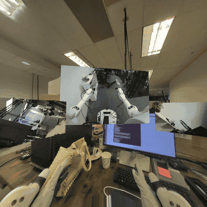

Camera Streaming#
camera_viz is the reference camera-streaming sample built on Televiz (isaacteleop.viz). It captures frames from one or more cameras
and streams them to an XR headset — one plane per camera, aspect-fit — either directly or from a
robot to a workstation over the network (split mode). It can also stream recorded camera
data — a video file replayed in place of a live camera — and render
to a desktop window instead of the headset.
The sample lives at examples/camera_viz/. This page walks you from setup and a hardware-free first run to real cameras and the robot → workstation split mode. For the exact command surface and flags, see the README.
{kind=link}

camera_viz in XR mode — one plane per camera.#
Requirements#
A workstation meeting the system requirements (Ubuntu, NVIDIA GPU, CUDA driver) — every source hands frames to the renderer GPU-resident via CuPy.
For Jetson platforms:
Orin: JetPack 6.2.x or 7.2.x
Thor: JetPack 7.x
For the default XR mode, a headset to connect as the CloudXR client — follow the quick start step 5. Connect an XR headset. The viewer launches the CloudXR runtime itself; nothing to start separately. No headset handy?
--mode windowrenders to a desktop window instead.
Setup#
Clone the repository if you haven’t already (quick start step 1. Check out code base (for examples)), then run the sample’s one-time setup:
examples/camera_viz/camera_viz.sh setup
source examples/camera_viz/.venv/bin/activate
There is no need to install the isaacteleop pip package yourself. setup builds the
sample’s own environment: isaacteleop[cloudxr] — the cloudxr extra is not optional here,
since XR is the default display mode and the viewer launches the runtime itself — plus every
other Python dependency, into .venv/ via uv. It resolves a version new enough for the
sample on its own, falling back to a release candidate and then, after asking, to a source build
of the surrounding checkout (scripts/_install_deps.sh holds the minimum; --wheel and
--build-from-source override the choice). Finally it probes the system packages it needs and
prints the exact apt-get line to approve — declining, or a non-interactive run, aborts.
By default setup provisions the direct-mode path — USB / UVC and OAK-D camera support. Split
mode (RTP) and ZED support are opt-in, since both pull in dependencies the direct path never
needs. Flags trim or extend that:
Flag |
Effect |
|---|---|
|
Skip USB / UVC webcam support ( |
|
Skip OAK-D support ( |
|
Also install the split-mode dependencies: the GStreamer system packages, PyGObject, and the
native NVENC/NVDEC codec build. Required for |
|
Also build + install the ZED SDK’s Python API ( |
|
Split mode only — robot-side install of just the sender’s dependencies. |
|
Split mode only — extra CUDA wiring JetPack images need on the robot. |
|
Install into an existing virtual environment instead of creating |
|
Install a locally built |
|
Skip the package index and build |
First run — a recording, no camera required#
The recorded-camera source (type: video) replays a video file through exactly the same
source → layer → Televiz path a live camera uses. It is the supported way to stream recorded
camera data, it needs no extra setup, and it is the quickest end-to-end check. A test clip ships
with the repo, and configs/replay.yaml
already points at it:
cd examples/camera_viz
./camera_viz.sh run configs/replay.yaml # XR headset (default)
./camera_viz.sh run configs/replay.yaml --mode window # desktop window instead
In XR mode the viewer first brings up the CloudXR runtime (accept the EULA on first launch, or
pass --accept-eula), then you should see the terminal report the session and the source
coming up:
camera_viz: source=local, mode=xr, xr=True, shapes=quad, 1 layer(s)
[video] opening...
[video] connected
[video] streaming
and the clip looping on a plane in the headset once it connects — or in a desktop window
(mode=window, xr=False) with the --mode window override, which starts no runtime.
Replaying your own recording#
Point path at any file OpenCV’s FFmpeg backend reads — mp4 / mkv / webm carrying H.264,
HEVC, AV1, and so on. The file is probed once at startup for its size and frame rate (a missing
or absurd rate falls back to 30 fps); a missing or unreadable file is a configuration error and
fails immediately instead of retrying like a camera would. A complete config:
source: local
cameras:
- name: replay
enabled: true
type: video
path: ../test_data/recording.mp4 # required; relative to this YAML's directory
loop: true # false = hold the last frame at end of file
fps: 0 # 0 = the file's native rate
stereo: false # true = split a side-by-side recording into eyes
# width/height default to the file's native size (per eye when stereo)
display:
mode: xr # or: window
placements:
replay: { lock_mode: lazy, distance: 1.5 }
With source: rtp, width, height, and fps become required — the sender paces its
encode loop at fps and the receiver sizes its decoder from the config — and stereo is
rejected, since the sender needs per-eye streams. A mono recording is otherwise a fine capture
side for split mode and for loopback, which exercises the whole
encode → UDP → decode path with no camera attached.
Supported sources#
The source kind is selected by the type field of each entry in the YAML cameras list:
|
Notes |
|---|---|
|
USB / UVC cameras — anything |
|
OAK-D RGB / LEFT / RIGHT; mono or |
|
ZED 2 / Mini / X One; mono or |
|
Recorded camera data — video-file replay (anything OpenCV’s FFmpeg backend reads). Loops
by default; |
|
Debugging tool — GPU-generated test pattern, no hardware or file. |
Running with a real camera#
Attach the camera to the machine that runs the viewer, keep source: local in the config, and
run with the matching config:
./camera_viz.sh run configs/v4l2.yaml # or oakd.yaml / zed.yaml
You should see the same startup lines as above with the camera’s tag ([v4l2],
[oakd], [zed]) and the live feed. Multiple entries in the cameras list render as one
plane each.
Display modes#
XR is the default: each camera renders as its own plane in the headset via the active OpenXR
runtime, and stereo sources (stereo: true) render true side-by-side stereo. Pass
--mode window (or set display.mode: window in the YAML) to render to a desktop window
instead — no headset or runtime needed; stereo shows the left eye.
In XR, how a plane follows the operator’s head is the per-camera lock_mode under
display.placements.<name>:
Mode |
Behavior |
|---|---|
|
Placed once in front of you and stays put. |
|
Follows your head every frame. Head-locked content updates its pose at application
rate, so it trails fast head motion by roughly a frame — expected for any head-locked
OpenXR layer; prefer |
|
Follows your position but not your rotation: the surface stays pointed where you first looked, walks with you, and turning your head looks around it. The natural mode for wide cylinder feeds (a “virtual gimbal”). |
|
World-locked, but re-snaps in front of you when you look away (default). |
Lazy-mode knobs live under placements.<name>: look_away_angle_deg,
reposition_distance, reposition_delay_s, transition_duration_s.
Display surfaces#
By default each camera renders on a flat plane, which suits normal-FOV feeds. Wide-FOV and
panoramic sources look better on a curved surface: set shape per camera under
display.placements.<name>:
Shape |
Behavior |
|---|---|
|
Flat plane. All lock modes apply. |
|
Curved arc facing the operator, so the image stays at a constant viewing distance edge
to edge. |
|
Full 360°×180° sphere around the operator, for equirectangular panorama / VR-video sources. Lock modes don’t apply. |
Curved shapes exist only in XR mode — the viewer exits with an error in window mode. Stereo
sources render per-eye textures on the same surface, and stereo_baseline_mm adds a per-eye
pose shift (no effect on the equirect sphere at its default infinite radius).
Surfaces are composited by the OpenXR runtime, which keeps them sharp under head motion and lets
CloudXR stream them efficiently (see
OpenXR composition layers). For flat planes only,
compositor: televiz opts a camera back into Televiz’s built-in compositor. On Jetson Orin
(CloudXR experimental runtime), set compositor: televiz so the plane is not left black; see
Troubleshooting below.
CloudXR runtime flags#
In XR mode the viewer launches the CloudXR runtime and WSS proxy itself. Useful flags:
--no-launch-cloudxr-runtime— reuse an already-running runtime.--accept-eula— accept the CloudXR EULA non-interactively (first run only).--cloudxr-device-profile PROFILE—NV_DEVICE_PROFILE(defaultQuest3).
Run camera_viz.py --help for the rest (install dir, env-config file, WSS proxy toggle).
Split mode — robot → workstation over RTP#
Split mode runs the capture side on the robot (camera_streamer.py) and ships RTP H.264 to
the viewer on the workstation (source: rtp).
Warning
Split mode is not recommended in most cases. It exists for one situation: the cameras are on the robot, but Isaac Teleop runs on a workstation, so the frames must be streamed to where Isaac Teleop is running. That costs a full extra encode/decode hop — NVENC on the robot, UDP, NVDEC on the workstation — so whenever a camera can attach directly to the machine running Isaac Teleop, run direct mode instead. Wired networks only: there is no retransmit or FEC — one lost packet corrupts one frame until the next IDR (default every 5 s).
In split mode every camera entry must pin width, height, and fps in the YAML — the
receiver sizes its decoder from the config, not from the wire.
The workstation needs the RTP dependencies, which setup does not install by default — re-run
it with --with-rtp if you provisioned for direct mode first. The robot side is handled by
deploy, which implies the flag.
Set source: rtp in the config, export the robot/streaming credentials once per shell, then
deploy the sender and run the viewer:
export REMOTE_HOST=10.0.0.5 REMOTE_USER=nvidia
export STREAMING_HOST=10.0.0.42 # workstation IP
./camera_viz.sh deploy configs/v4l2.yaml # full deploy + systemd unit on the robot
./camera_viz.sh run configs/v4l2.yaml # viewer on the workstation
deploy rsyncs the source to the robot, installs sender dependencies, renders a
camera-streamer.service systemd user unit (injecting --host from $STREAMING_HOST
without editing the YAML on disk), and enables it. Operate the running unit with
./camera_viz.sh service-{status,logs,restart}. The sender retries forever across unplug, SDK
errors, and network blips.
Loopback#
Loopback is a testing / debugging aid, not a deployment mode: ./camera_viz.sh loopback
configs/v4l2.yaml runs the sender and viewer together on 127.0.0.1 — the quickest way to
smoke-test the RTP path on one machine. It also works camera-free with a mono type: video
entry (set width / height / fps).
Configuration#
A single YAML drives both capture and visualization. Each entry in the cameras list becomes
its own plane (and, in split mode, its own RTP port). Abbreviated:
source: local | rtp
streaming:
host: 192.168.1.100 # workstation IP (overridden at deploy time)
encoder: auto | native | gstreamer
cameras:
- name: cam
enabled: true
type: v4l2 # v4l2 | oakd | zed | video | synthetic
width: 2560 # video: optional — defaults to the file's size
height: 720 # (required when source: rtp)
fps: 30
stereo: false # zed / video / synthetic — per-eye capture + SBS in XR
path: clip.mp4 # video only — file to replay, relative to this YAML
loop: true # video only — rewind at end of file
rtp:
port: 5000 # left eye when stereo
port_right: 5001 # required when stereo + source: rtp
bitrate_mbps: 15
display:
mode: xr | window # default: xr
window: { width, height }
xr: { near_z, far_z }
clear_color: [r, g, b, a]
placements:
cam:
lock_mode: lazy # world | head | lazy | gimbal
distance: 1.5
# size: [w_m, h_m]
# stereo_baseline_mm: 0
# shape: quad # quad | cylinder | equirect (cylinder/equirect are XR-only)
# compositor: openxr # openxr (default) | televiz — quads only
# cylinder_radius_m: 2.0
# cylinder_angle_deg: 90
See the configs/ directory for a complete, commented YAML per source kind.
Troubleshooting#
The XR session fails to create — the viewer launches the CloudXR runtime itself; check
~/.cloudxr/logs/cxr_server.*.logandruntime_stderr.logfor the startup failure. If a runtime is already running from another app, pass--no-launch-cloudxr-runtime. Pass--mode windowto render to a desktop window instead (no runtime involved).No window appears over SSH —
--mode windowneeds a local display; run on the machine you’re sitting at, or use a video-capable remote desktop.“video source: no such file” — relative
path:values resolve against the YAML’s directory (configs/), not the directory you launched from.A source fails asking for CuPy / CUDA — check
nvidia-smiworks and setup completed; all sources allocate their frame buffers on the GPU.Black camera plane on Orin — with the CloudXR experimental runtime on Orin, the default OpenXR compositor shows the camera plane but leaves its contents black. Under the camera’s
display.placementsentry, setcompositor: televiz(quads only). The same feed displays correctly with this workaround:display: placements: cam: compositor: televiz
Split mode renders nothing — check the sender is up (
./camera_viz.sh service-status),$STREAMING_HOSTwas the workstation’s IP at deploy time, and UDP ports (default 5000+) aren’t firewalled.Not sure which side is stuck? — set
verbose: trueat the top of the YAML for periodic per-source breadcrumbs on both ends.
How it works#
The sample is organized so that capture, transport, and visualization are cleanly separated, with Televiz as the compositor at the end of the chain:
camera_viz/
├── camera_viz.sh — CLI: setup / loopback / run / deploy / service-*
├── camera_viz.py — receiver / viewer (drives a Televiz VizSession)
├── camera_streamer.py — robot-side RTP sender (per-camera supervisor)
├── pipeline/ — source ABC + threaded runner
├── placements/ — XR lock-mode strategies (world / head / lazy / gimbal)
├── sources/ — V4L2 / OAK-D / ZED / video replay / synthetic / rtp_h264
├── transports/ — RTP sender + receiver (native + GStreamer)
├── codec/ — native NVENC / NVDEC pybind module
├── configs/ — one YAML per source kind
├── test_data/ — sample replay clip (Git LFS)
└── scripts/ — installer + systemd unit template
Sources (sources/) implement a common source ABC and hand frames to a threaded runner in pipeline/. Each source produces GPU frames where possible — e.g. the ZED source uses
retrieve_image(MEM.GPU)so BGRA8 stays in VRAM and a CUDA kernel channel-swaps into contiguous RGBA with no host round-trip.The viewer (camera_viz.py) creates a
VizSessionand adds oneQuadLayerper enabled camera, then submits each frame to its layer and callsrender()once per frame. Stereo cameras submit both eyes.Transport (transports/) carries the split mode: an RTP H.264 sender on the robot and a receiver on the workstation, with a native NVENC/NVDEC codec module (codec/) or a GStreamer fallback.
Placement (placements/) holds the XR lock-mode strategies. Placement is application policy — Televiz only renders a layer at whatever pose the app sets each frame.